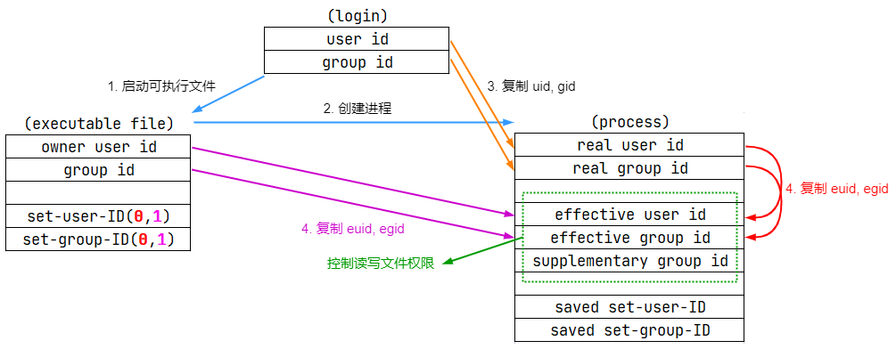
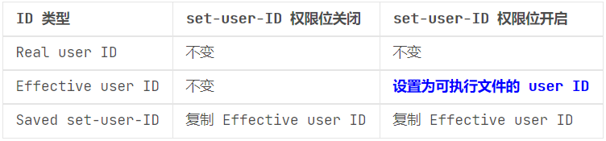
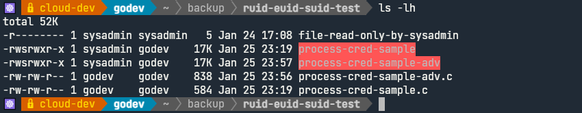

文档说明：
- OS 版本：
Ubuntu 20.04.3 LTS - kernel 版本：
5.15.0-57-generic - Linux 中各类 UID 的联系与区别对于理解进程权限与 Audit 审计系统发挥至关重要的作用，这些 UID 作为进程凭证。
- ✍ 可参考
man 7 credentials手册中的说明加以理解。
文档目录：
- 各类 UID 的解析
- ruid、euid 与 Saved set-user-ID 间的关系
- ruid 与 euid 的验证示例
- 各类 UID 在 Audit 审计系统中的说明
- 参考链接
各类 UID 的解析：
- user ID：
- 常规 Linux 用户 ID，作为系统中用户的唯一识别符。
- Real user ID（
ruid）：- 真实用户 ID
- 🤘 ruid 为拥有当前进程的用户 ID，即调用该可执行文件的用户。
- 一般情况下，最初登录 Shell 的 user ID 与 ruid 相同，但是该登录用户有可能通过 su 或 sudo 提权为其他非特权用户或特权用户，此时的 ruid 与最初的登录 user ID 不同。
Effective user ID（
euid）：- 有效用户 ID
- 🤘 euid 被内核使用确定进程可访问资源的权限
- 进程的权限由保存在 euid 中的 UID 来决定
- 通常而言，进程的 ruid 与 euid 保持一致，ruid 与 euid 对进程而言。
- euid 临时存储了另一个用户的 UID
- 🚀 euid 在使用系统调用与执行 set-user-ID 程序或 set-group-ID 程序时被修改。
- 也就是说，set-user-ID 程序或 set-group-ID 程序的可执行文件其本身也需要设置 set-user-ID 权限位（bit）后，euid 被更改为与可执行文件的所有者（owner）UID 相同，而未设置 set-user-ID 权限位（bit）的可执行文件，euid 依然与 ruid 保持一致，可参见下文 “ruid 与 euid 的验证示例” 部分。
- set-user-ID 权限位指的是 Linux 中的特殊权限 suid
- privileged 在不同的上下文中需加以辨别，可能是特权用户 root，也可能是其他普通用户。
Saved set-user-ID：
- 保存设置用户 ID
- 🚀 该 ID 相当于一个
buffer，在进程启动后，它会从 euid 拷贝信息到自身。对于非 root 用户，可以在未来使用setuid()系统调用来将 euid 设置成为 ruid 和 saved set-user-ID 中的任何一个。但是非 root 用户是不允许用 setuid() 将 euid 设置成为任何第三个 user ID。
- Audit user ID（
auid）：- 审计用户 ID，用于记录 Linux Audit 审计系统中的用户标识。
- auid 为最初登录 Shell 的的用户 ID
ruid、euid 与 Saved set-user-ID 间的关系：
- 进程启动过程中三者的赋值关系，如下图所示：
- 1️⃣2️⃣ 假定最初登录 Shell 的用户启动运行可执行文件，启动进程。
- 3️⃣ 设置进程的
ruid/rgid为当前用户的 uid/gid - 4️⃣ 设置进程的
euid/egid，根据可执行文件的set-user-ID与set-group-ID权限位进行设置，图中红色 0 表示关闭，紫色 1 表示开启。为 1 时，将进程的 euid/egid 设置为可执行文件的 uid/gid，否则从 ruid/rgid 拷贝。
- 以上过程可总结为下表：
🚀 ruid 与 euid 的验证示例：
需要注意的是 Linux 系统中 set-user-ID 与 set-group-ID 权限位对 shell 脚本无效，如下 process-cred-sample.c 程序所示：
1
2
3
4
5
6
7
8
9
10
11
12
13
14
15
16
17
18
int main()
{
uid_t ruid, euid, suid;
getresuid(&ruid, &euid, &suid);
printf("RUID: %d, EUID: %d, SUID: %d\n", ruid, euid, suid);
system("cat file-read-only-by-sysadmin"); // file-read-only-by-sysadmin: -r-------- sysadmin sysadmin
setreuid(geteuid(), geteuid()); // use euid to set ruid
getresuid(&ruid, &euid, &suid);
printf("RUID: %d, EUID: %d, SUID: %d\n", ruid, euid, suid);
system("cat file-read-only-by-sysadmin"); // file-read-only-by-sysadmin: -r-------- sysadmin sysadmin
return 0;
}以上程序中获取当前进程的 ruid、euid 与 suid，但是
system()函数调用了 shell 脚本，即使将该可执行文件的 set-user-ID 权限位开启也无法使用此权限位：1
2
3
4
5
6
7
8
9
10
11
12
13
14
15
16
17
18
19
20
21
22
23
24
25
26$ id
uid=1000(godev) gid=1000(godev) groups=1000(godev)
# 笔者示例使用 godev 普通用户验证
$ id -u sysadmin
1001
$ ls -lh file-read-only-by-sysadmin
-r-------- 1 sysadmin sysadmin 5 Jan 24 17:08 file-read-only-by-sysadmin
# 当前目录中先创建该文件，其中 Test 作为文本内容。
$ gcc -o process-cred-sample process-cred-sample.c
$ sudo chown sysadmin:godev process-cred-sample
# 更改可执行程序的所有者，sysadmin 为系统上的另一个普通用户。
$ ./process-cred-sample
RUID: 1000, EUID: 1000, SUID: 1000
cat: file-read-only-by-sysadmin: Permission denied
RUID: 1000, EUID: 1000, SUID: 1000
cat: file-read-only-by-sysadmin: Permission denied
# 由于可执行文件不具有 set-user-ID 权限位而无法更改 euid
$ sudo chmod u+s process-cred-sample
# 添加可执行文件的 set-user-ID 权限位
$ ls -lh process-cred-sample
-rwsrwxr-x 1 sysadmin godev 17K Jan 25 23:19 process-cred-sample
$ ./process-cred-sample
RUID: 1000, EUID: 1001, SUID: 1001
cat: file-read-only-by-sysadmin: Permission denied # 第一次输出
RUID: 1001, EUID: 1001, SUID: 1001
Test # 第二次输出以上命令第一次输出调用 shell 脚本而无法使用 set-user-ID 权限位返回
Permission denied。第二次输出使用setreuid()系统调用，将 euid 的值代替 ruid 的值作为参数传入，因此 ruid 也返回 1001，此时该进程可读取对应的文件内容，但请注意的是，此处的 ruid 是 setreuid() 系统调用的行为，从 kernel 的角度来看 ruid 依然是实际运行进程的 UID，即为 godev(1000)。因此，若要实现 shell 脚本相同的效果，可使用
fopen()与fread()函数将以上源码更改为名为 process-cred-sample-adv.c 程序：1
2
3
4
5
6
7
8
9
10
11
12
13
14
15
16
17
18
19
20
21
22
23
24
25
26
27
28
29
30
31
32
33
void read_file() {
FILE *fp;
char buffer[BUFF_SIZE];
/* Open file for both reading and writing */
fp = fopen("file-read-only-by-sysadmin", "r");
/* Read and display data */
fread(buffer, BUFF_SIZE - 1, sizeof(char), fp);
printf("%s\n", buffer);
fclose(fp);
}
int main()
{
uid_t ruid, euid, suid;
getresuid(&ruid, &euid, &suid);
printf("RUID: %d, EUID: %d, SUID: %d\n", ruid, euid, suid);
read_file(); // file-read-only-by-sysadmin: -r-------- sysadmin sysadmin
setreuid(geteuid(), geteuid());
getresuid(&ruid, &euid, &suid);
printf("RUID: %d, EUID: %d, SUID: %d\n", ruid, euid, suid);
read_file(); // file-read-only-by-sysadmin: -r-------- sysadmin sysadmin
return 0;
}同样编译程序，更改可执行文件所有者并添加 set-user-ID 权限位：
1
2
3
4
5
6
7
8
9$ gcc -o process-cred-sample-adv process-cred-sample-adv.c
$ sudo chown sysadmin:godev process-cred-sample-adv
$ sudo chmod u+s process-cred-sample-adv
$ ./process-cred-sample-adv
RUID: 1000, EUID: 1001, SUID: 1001 # 第一次输出
Test
RUID: 1001, EUID: 1001, SUID: 1001 # 第二次输出
Test第一次输出由于直接使用 fopen() 与 fread() 函数且 euid 更改为 1001，可读取对应文件的内容，而第二次输出通过 setreuid() 系统调用将 ruid 与 euid 都设置为 1001，也可读取对应文件的内容，因此对于系统资源的访问取决于
euid。- 以上验证源码与文件的权限如下所示：
各类 UID 在 Audit 审计系统中的说明：
- 使用 Audit 审计系统过程中对文件、目录或系统调用的审计结果以审计日志的方式呈现，在众多的 type=SYSCALL 类型审计日志中包含了大量的 auid、uid、euid、suid 等的信息。
以下将审计上述 process-cred-sample-adv 可执行文件，进一步理解各类 UID 的作用：
1
2
3
4
5
6
7
8
9
10
11
12
13
14
15
16
17
18
19
20
21
22
23
24
25
26$ sudo apt-get install -y auditd
# 安装 auditd 软件包
$ sudo systemctl enable --now auditd.service
# 启动 auditd.service 守护进程
$ sudo auditctl -w ~/backup/ruid-euid-suid-test/process-cred-sample-adv \
-p x -k new-uid-adv
# 添加名为 new-uid-adv 搜索关键字的审计规则，监控可执行文件的执行权限属性，日志将写入
# /var/log/audit/audit.log 中
$ sudo auditctl -l
-w /home/godev/backup/ruid-euid-suid-test/process-cred-sample-adv -p x -k new-uid-adv
$ ./process-cred-sample-adv
$ sudo ausearch -i -k new-uid-adv
type=PROCTITLE msg=audit(01/26/2023 13:47:38.727:1185) : proctitle=./process-cred-sample-adv
type=PATH msg=audit(01/26/2023 13:47:38.727:1185) : item=1 name=/lib64/ld-linux-x86-64.so.2
inode=403317285 dev=08:02 mode=file,755 ouid=root ogid=root rdev=00:00 nametype=NORMAL cap_fp=none
cap_fi=none cap_fe=0 cap_fver=0 cap_frootid=0
type=PATH msg=audit(01/26/2023 13:47:38.727:1185) : item=0 name=./process-cred-sample-adv
inode=137438286 dev=08:03 mode=file,suid,775 ouid=sysadmin ogid=godev rdev=00:00 nametype=NORMAL
cap_fp=none cap_fi=none cap_fe=0 cap_fver=0 cap_frootid=0
type=CWD msg=audit(01/26/2023 13:47:38.727:1185) : cwd=/home/godev/backup/ruid-euid-suid-test
type=EXECVE msg=audit(01/26/2023 13:47:38.727:1185) : argc=1 a0=./process-cred-sample-adv
type=SYSCALL msg=audit(01/26/2023 13:47:38.727:1185) : arch=x86_64 syscall=execve success=yes
exit=0 a0=0x55e64d0712b0 a1=0x55e64d1fab50 a2=0x55e64d1ed380 a3=0x8 items=2 ppid=22490 pid=41229
auid=godev uid=godev gid=godev euid=sysadmin suid=sysadmin fsuid=sysadmin egid=godev sgid=godev
fsgid=godev tty=pts3 ses=4 comm=process-cred-sa exe=/home/godev/backup/ruid-euid-suid-test/process-cred-sample-adv
subj=unconfined key=new-uid-adv在执行 process-cred-sample-adv 可执行文件后，使用
ausearch查找对应的执行日志，其中type=SYSCALL中uid=godev为 kernel 确定的 ruid 值 1000(godev)，虽然在 process-cred-sample-adv 进程返回中 ruid 为 1001，但该值为 setreuid() 系统调用重新设置的值，真实的 ruid 依然为 1000(godev)。euid=sysadmin与suid=sysadmin的结果与进程返回的结果完全一致。
参考链接：
- credentials(7) - Linux man page
- setreuid(2) - Linux manual page
- Difference between Real User ID, Effective User ID and Saved User ID
- 深刻理解 - real user id, effective user id, saved user id in Linux
- 《Linux/Unix 系统编程手册》（上册）- 第9章 进程凭证（提取码：wop8）
- ruid, euid, suid usage in Linux